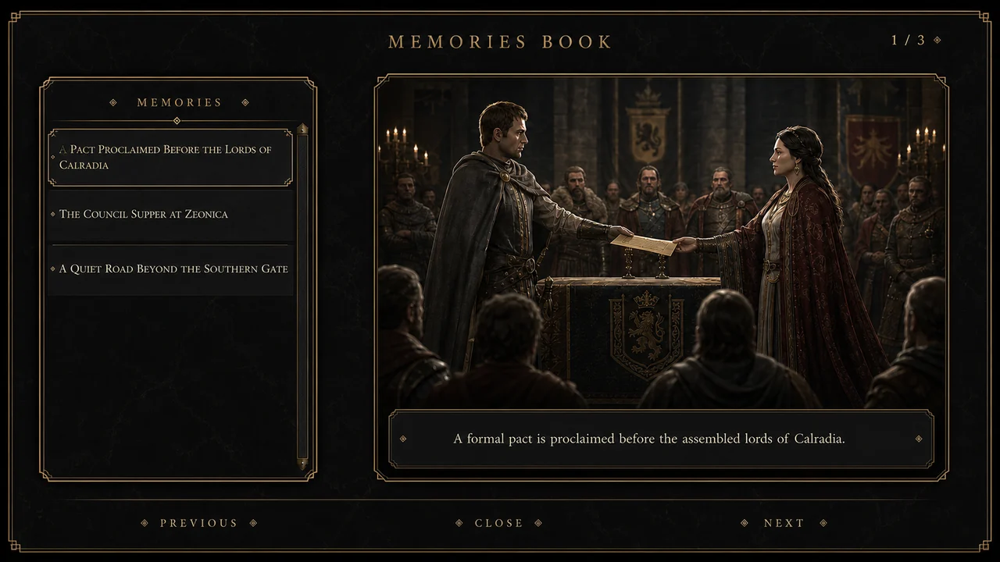

Pictures, appearance, and memories
Use portraits, scene pictures, outfit previews and the Memory Book.
Portraits and Look at them
#Reign can display persistent portraits across its own screens and supported native surfaces. Shipped characters can use the shared library; dynamic people and changed appearances can use campaign-specific pictures. A missing picture does not mean the person has no identity or history.
Use portrait zoom for a larger view and Look at them for the supported appearance description and refresh choices. New portrait generation follows the configured image provider. It is separate from simply viewing a cached image.
Current appearance and equipment matter, especially for encountered residents. A civilian's work clothes should not silently turn into noble costume just because a portrait was requested. Normal/adult image-profile settings and outfit changes have their own boundaries; they do not grant new gameplay authority.
The shipped shared library is in the installed Reign module under PortraitCache/_shared. Campaign-generated portraits live in the managed ReignServer data/PortraitCache folder, grouped by campaign identity. Saves from the same campaign share that campaign's portrait folder.
Reign checks the available campaign portrait for that character and appearance before asking for a fresh render. If a portrait refresh or outfit confirmation stalls, return to the same character and use the existing retry or confirmation. The approved picture and its smaller versions can finish publishing after the original request was interrupted.
View scenes and outfit previews
#View in individual or Party Chat can request an illustration of the current scene. It uses the current conversation and relevant people as context; the resulting image can appear in the transcript and open larger. It is optional cloud image work, not an automatic screenshot of the native scene.
An image can help you visualize a situation but cannot prove that a gift was delivered, a person arrived, or a battle occurred. If clothing is being changed, use the supported before/after preview and keep/revert choices rather than treating a generated picture as a completed equipment transfer.
Castle scenes and Tavern House scenes have separate switches. Turning general portrait replacement off does not necessarily turn off every scene-image feature, and a scene may need portrait identity preparation even when native portraits remain visible elsewhere.
The Memory Book
#Open Memory Book from the quest interface to browse illustrated memories. The book combines recorded experiences with optional artwork. Navigate the list and selected scene rather than expecting it to be a conventional quest objective list.
An illustration is a visual interpretation of stored events. Changing or deleting a picture does not rewrite the original experience, promises, or world history. A fact can remain remembered without having an illustration.
Long campaigns can group older exchanges into compact memory while retaining their recorded sources. Ask about a specific person, place, or incident when you want to bring it back into conversation. Characters can remember the gist yet be unsure about exact wording, who said it, or whether a quoted claim was true.

Small interface and native-behavior changes
#Reign replaces supported main-menu logo/video presentation and uses its black-marble court style across major screens. It preserves usable native skill information, banners, and quest markers while hiding exact NPC relationship values.
Narrated actions in supported conversation responses use italic treatment to help separate them from speech. The action builder's protected sentence has its own presentation. Neither formatting style means an action already happened.
Reign-owned popups support consistent Enter/Escape behavior. Safety repairs also handle an encyclopedia interface disappearing during a tick, delayed native relocation races, and map-bar input during unavailable states. These are quiet stability changes rather than new player commands.
NPC-owned settlement dungeons receive the same native prisoner-holding advantage as player-owned ones. Noble prisoners may therefore remain in AI custody more reliably. The foreign-governor loyalty penalty is removed by the ruler integration, while foreign ownership and matching-governor benefits retain their separate effects. Those two culture rules should not be confused.
Reign disables Bannerlord's native clan blood feuds and their automatic execution queues, including old pending feud actions on load. Deliberate executions and Reign's sovereign judgments retain their own consequences.